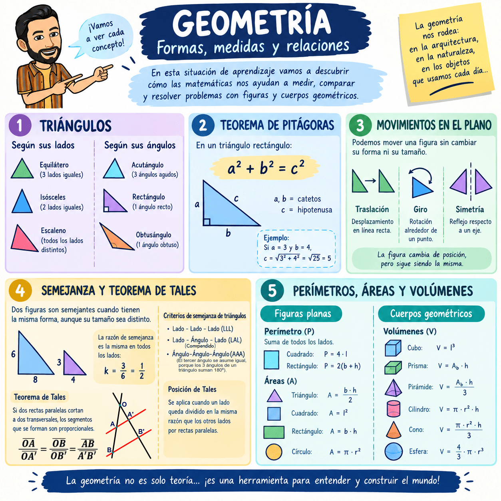

¿Qué vamos a aprender?
Vamos a trabajar diferentes contenidos de geometría que nos ayudarán a reconocer, medir y calcular propiedades de figuras planas y cuerpos geométricos.
Comenzaremos con los triángulos, que podemos clasificar según sus lados en equiláteros, isósceles y escalenos, y según sus ángulos en acutángulos, rectángulos y obtusángulos.
En los triángulos rectángulos utilizaremos el teorema de Pitágoras para relacionar sus lados:
\(a² + b² = c²\)
donde \(a\) y \(b\) son los catetos y \(c\) es la hipotenusa.
Después estudiaremos los movimientos en el plano, como las traslaciones, giros y simetrías, que permiten cambiar la posición o la orientación de una figura sin modificar su forma y tamaño.
También aprenderemos qué significa que dos figuras sean semejantes. Dos figuras semejantes tienen la misma forma, aunque pueden tener distinto tamaño. Trabajaremos el teorema de Tales y los criterios de semejanza de triángulos, que nos permiten calcular longitudes que no conocemos a partir de otras que sí conocemos. En figuras semejantes se mantiene una misma razón de semejanza:
\(k = \dfrac{\text{longitud de la figura nueva}}{\text{longitud de la figura original}}\)
Finalmente, aprenderemos a calcular perímetros, áreas y volúmenes. El perímetro mide la longitud del contorno de una figura y el área (o superficie) mide la superficie que ocupa. Por ejemplo, algunas áreas conocidas son:
- Cuadrado: \(A = l²\)
- Rectángulo: \(A = b · h\)
- Triángulo: \(A = \frac{b · h}{2}\)
- Círculo: \(A = π · r²\)
También estudiaremos los volúmenes, que indican el espacio que ocupa un cuerpo. Por ejemplo, el volumen de un cubo es:
\(V = l³\)
Trabajaremos además con prismas, pirámides y otros cuerpos geométricos, así como con los sólidos de revolución, como el cilindro, el cono y la esfera. De esta forma, aprenderemos a aplicar las matemáticas para medir, comparar y resolver problemas geométricos de situaciones reales.
